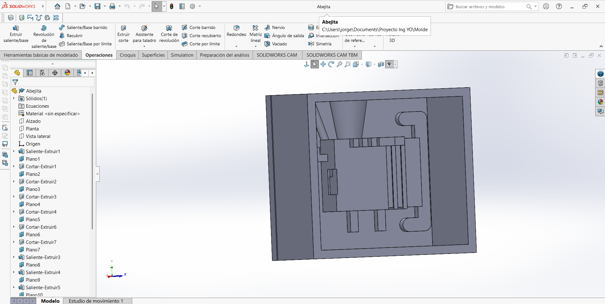
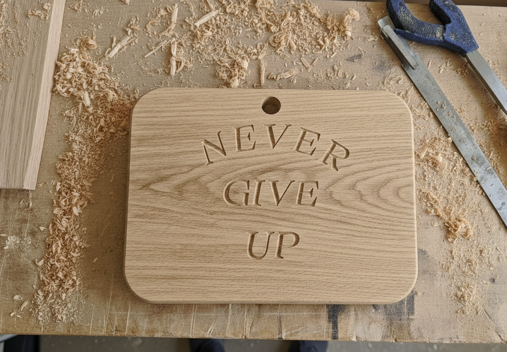

Semana 8 y 9: Router CNC
Proyecto de Ingeniería
Resumen del router CNC
Durante esta semana me familiaricé con el uso del router CNC, una máquina diseñada para cortar y dar forma a distintos materiales como madera, MDF o espuma rosa. Su funcionamiento se basa en ejecutar automáticamente un recorrido de corte a partir de un diseño digital que uno mismo crea.
Procedimiento que seguimos para operar el router
1. Diseño de la pieza
El primer paso fue elaborar el modelo en un programa de dibujo, donde establecimos las dimensiones y la geometría exacta de la pieza.
2. Conversión del diseño a formato DXF
Una vez terminado el dibujo, lo exportamos como archivo DXF, formato compatible con el software de preparación de corte.
3. Configuración en VCarve
En VCarve importamos el DXF y configuramos parámetros como:
- Profundidad del corte
- Tipo de herramienta
- Material
- Estrategias de corte
Este programa genera el código que interpretará la máquina.
4. Transferencia del código
Cuando VCarve produce el archivo final, lo guardamos en una memoria USB para poder llevarlo directamente al router.
5. Corte en la máquina
En el router se carga el archivo desde la memoria, se ajusta la máquina según el material y finalmente se inicia el proceso de corte para obtener la pieza basada en el diseño original.
Características importantes de las puntas del router CNC
Antes de elegir un tipo de punta es necesario entender qué factores influyen en su desempeño.
1. Material de la punta
- Carburo (Carbide): Muy resistente, mantiene el filo por más tiempo y ofrece cortes limpios. Adecuado para madera, MDF, acrílico y plásticos.
- Acero rápido (HSS): Más barato, pero se desgasta antes. Funciona para maderas suaves, no tan recomendable para MDF.
2. Diámetro (grosor)
- Delgadas: Para detalles precisos o zonas pequeñas; no soportan cortes profundos.
- Gruesas: Retiran más material, permiten mayor profundidad y son más estables.
3. Longitud de corte
Indica la parte útil que realmente corta.
- Longitudes cortas → materiales delgados
- Longitudes largas → materiales gruesos, pero generan más vibración
4. Longitud total
Incluye toda la broca.
- Puntas largas → cortes profundos
- Puntas cortas → mayor firmeza y precisión
5. Zanco (Shank)
Es el extremo que entra en el router. Debe tener el mismo tamaño que el portabrocas. Un zanco más grueso brinda más estabilidad.
Tipos de puntas para router CNC
1. Punta recta (Straight Bit)
Sirve para cortes rectos, vaciados y contornos. Es la punta más común.
2. Punta en “V” (V-Bit)
Perfecta para grabados, letras y decoraciones. El ángulo de la “V” define cómo se verá el grabado.
3. Punta redondeada (Ball Nose)
Ideal para relieves 3D, superficies curvas y trabajos artísticos.
4. Punta de desbaste (Roughing / End Mill)
Retira gran cantidad de material rápidamente. Se usa al inicio para preparar la pieza.
5. Punta cónica para detalles (Tapered Bit)
Útil para detalles pequeños, grabados finos y letras delicadas.
Aquí están nuestros moldes que diseñamos:

Y eston son los diseños de nuestras tablas cortadas con el Router:
